도시권에서 딱 하나씩 선정
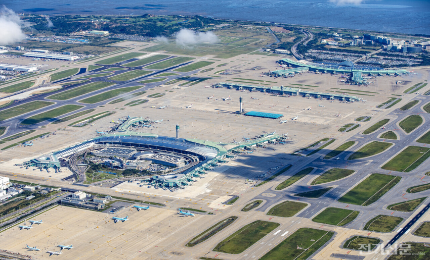
서울 - 인천국제공항 (ICN)
우리같은 한국인들이야 인천과 김포공항을 구별하지만 외국인들 입장에서는 사실상 여기가 서울공항이다. 이름은 인천이지만 서울(인천) 서울(김포)로 구별하는 것. 2001년 김포공항을 대체하기 위해 바다를 메워 건설한 신공항으로, 한국인들이 먼 나라로 가기 위해 여기를 적어도 1번은 들러야 한다. 아무리 봐도 인천공항은 월클 공항이 맞다. 인천과 김포공항 이용객을 합하면 1억 명 가까이 나온다고 함
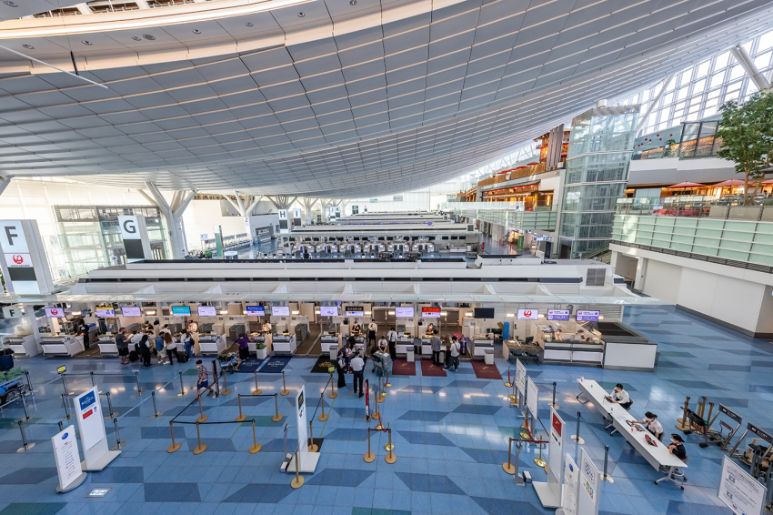
도쿄 - 도쿄 국제공항 (HND)
도쿄는 하네다와 나리타 둘다 잘 나가기 때문에 고민하다가 하네다를 선택했다. 공식 명칭이 도쿄 국제공항임. 나리타 공항이 생기고 국내선 전용이 되었지만 나리타 공항의 단점이 이만저만이 아니어서 하네다에 다시 국제선이 다니기 시작했다. 뉴욕 런던행은 아예 하네다 독점. 전체 이용객만 봐도 국내선 수요가 뒷받침되는 하네다가 나리타의 2배를 넘는다
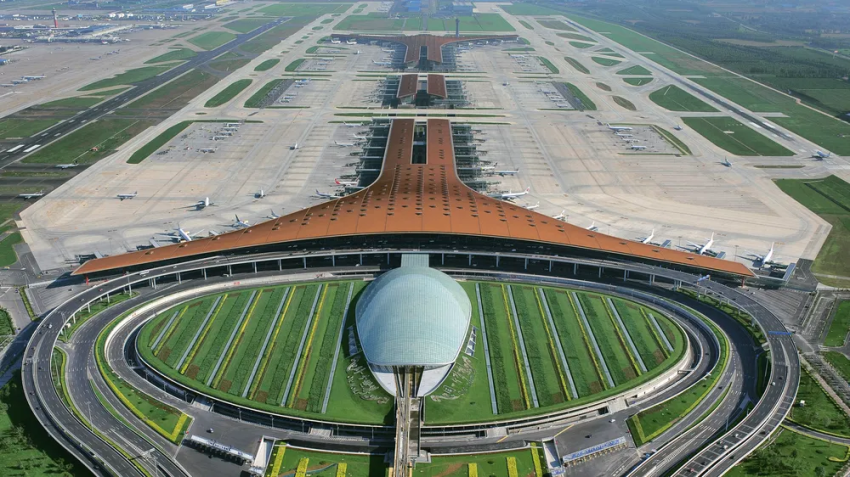
베이징 - 서우두 국제공항 (PEK)
공항 터미널 모양이 괜찮은 것 같음. 2019년 서우두 공항 수요를 분산시키기 위해 다싱 공항이 개항했지만 여전히 베이징의 메인은 서우두 공항이다. 다싱은 시내에서 너무 멀어
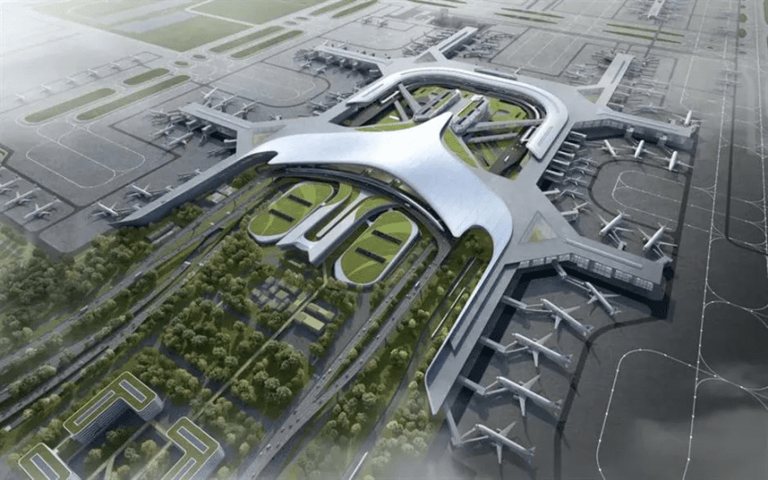
상하이 - 푸둥 국제공항 (PVG)
훙차오 공항을 대체하여 1998년에 개항했다. 현재 중국에서 가장 이용객이 많은 공항. 이유는 단순히 베이징 공항 수요가 분산되었기 때문이다
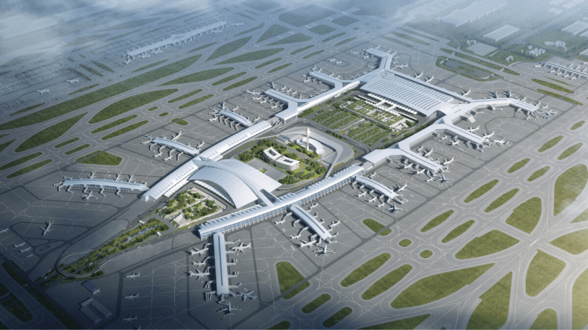
광저우 - 바이윈 국제공항 (CAN)
중국에서 2번째로 이용객이 많은 공항으로 연간 8000만이 넘는다. 중국은 국내선 항공 수요도 아주 많다는 걸 감안해야 함
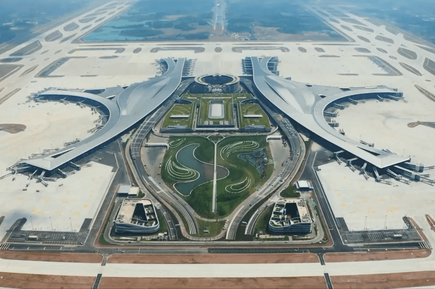
청두 - 톈푸 국제공항 (TFU)
기존 솽류 국제공항을 대체하여 2021년 개항했다. 솽류 공항은 국내선 전용으로 격하됨. 그 대신 시내와 너무 멀어지게 되었다
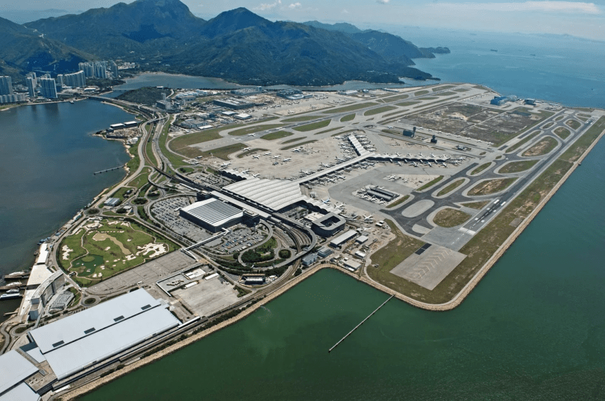
홍콩 - 홍콩 국제공항 (HKG)
개떡같은 착륙 과정으로 유명했던 카이탁 공항을 대체하는 신공항. 일명 첵랍콕 국제공항으로 불린다
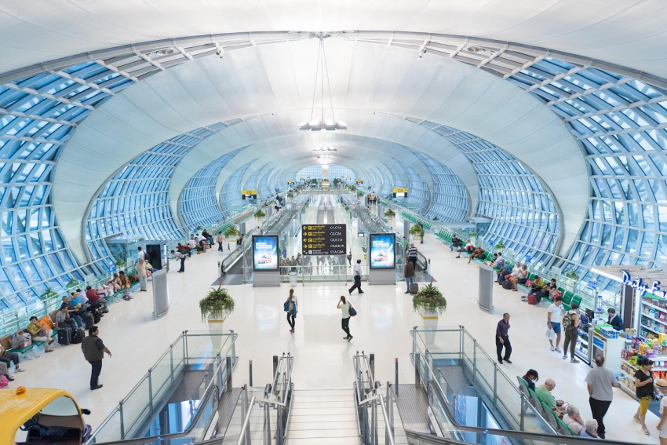
방콕 - 수완나품 국제공항 (BKK)
기존의 돈므앙 공항을 대신하는 신공항. 방콕이 월클 관광도시니까 연간 이용객 6000만으로 엄청 터져나가는데 돈므앙 공항도 연간 이용객 3000만이다
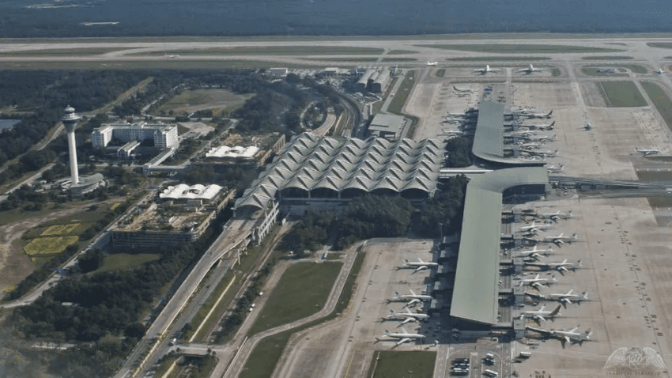
쿠알라룸푸르 - 쿠알라룸푸르 국제공항 (KUL)
월클 도시라곤 생각하지 않지만 의외로 붐비는 곳이어서 등장했다. 홍콩 수완나품 공항보다 이용객이 많은 곳이다
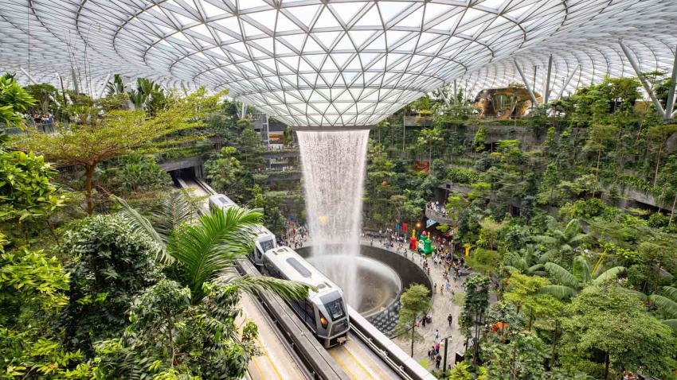
싱가포르 - 창이 공항 (SIN)
스카이트랙스 선정 2025 세계 최고의 공항 1위. 이게 어떻게 식물원이 아니고 공항이냐고
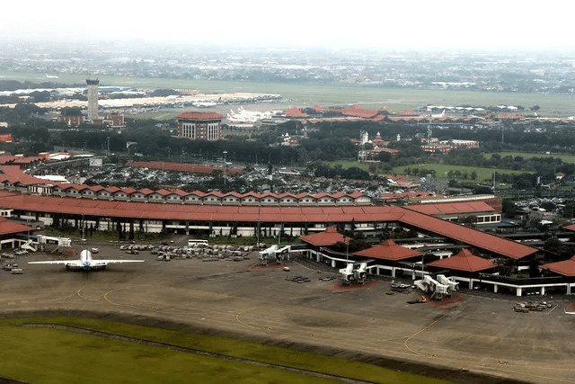
자카르타 - 수카르노 하타 국제공항 (CGK)
인도네시아 초대 대통령과 초대 부통령의 이름을 땄다. 동남아는 방콕과 싱가포르만 하고 싶었는데 자카르타가 세계에서 가장 인구가 많은 도시권이기도 하고 남반구에서 가장 이용객이 많은 공항이어서 특별히 언급해 봤음
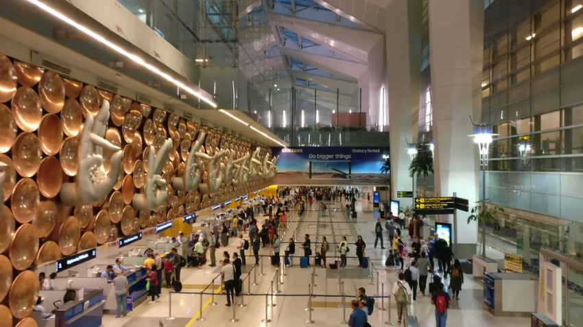
델리 - 인디라 간디 국제공항 (DEL)
인도치곤 디자인이 세련됐다. 근데 인디라 간디가 인도에서 높은 평가를 받는 총리인가? 델리 인구가 엄청 많은데도 여전히 공항 하나로만 버티고 있다
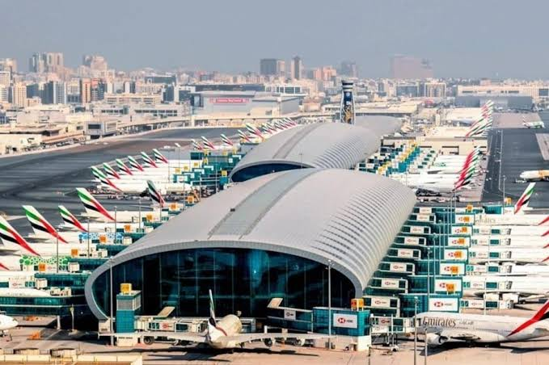
두바이 - 두바이 국제공항 (DXB)
오일머니의 힘으로 세계를 대표하는 공항이 되다. 작년 기준 세계에서 2번째로 이용객이 많은 공항이자 국제선 이용객 1위. 위치가 좋다 보니 에미레이트 항공은 안 가는 곳이 없다. 그러나 올해 이란 전쟁으로 피해를 많이 보게 된다
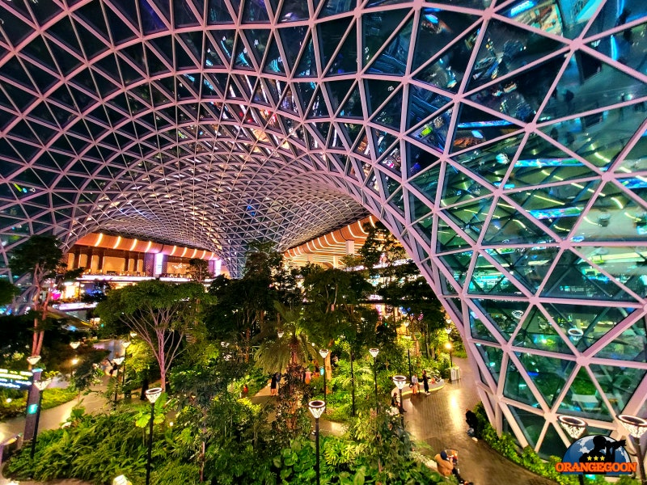
도하 - 하마드 국제공항 (DOH)
2025 스카이트랙스 선정 세계 최고의 공항 2위. 중동에서 국제적인 나라는 사우디보다 UAE와 카타르인 것 같다. 사우디아라비아의 제다 공항이 더 이용객이 많지만 여긴 무슬림 성지순례 수요가 더 커서 한국 직항이 없음. 여기도 역시 이란 전쟁으로 손해를 많이 봤다
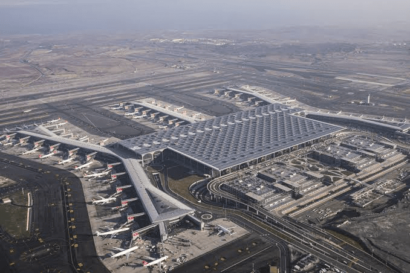
이스탄불 - 이스탄불 국제공항 (IST)
기존 아타튀르크 공항을 대체하기 위해 2019년 개항한 신공항. 아시아와 유럽의 교차로답게 세계에서 가장 많은 나라와 가장 많은 공항으로 갈 수 있는 공항이다. 역시 터키항공도 세계에서 가장 많은 나라에 갈 수 있는 항공사. 하지만 두바이와 이스탄불에서도 못 가는 나라가 있으니 바로 북한이다
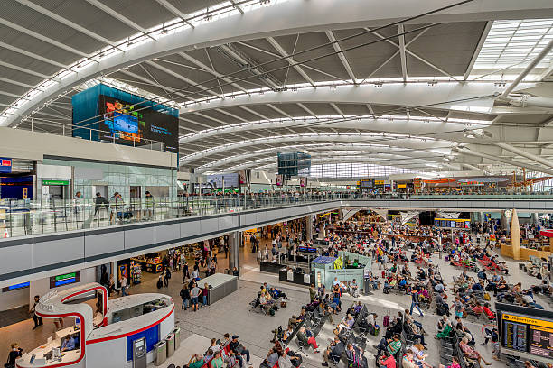
런던 - 히스로 공항 (LHR)
공식 명칭엔 국제가 없다. 세계 3대 도시 중 하나인 런던답게 항상 박터지는 곳. 런던은 주요 공항이 5개인데 이들의 이용객을 다 합치면 무려 1억 8천만이나 된다. 이중 가장 이용객이 많고 런던 시내와 가장 가까운 곳이며 한국행도 여기서만 다닌다
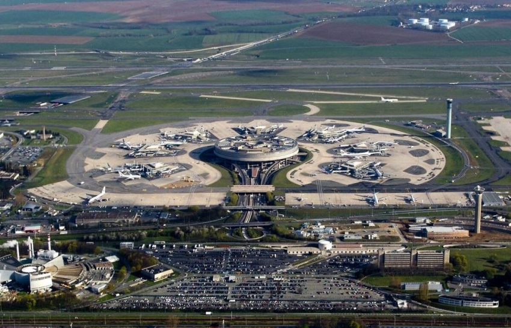
파리 - 샤를 드골 공항 (CDG)
기존 오를리 공항을 대신하여 만들었다. 여기도 역시 세계적으로 붐비는 곳. 오를리 공항과 합치면 연간 이용객 1억을 넘긴다
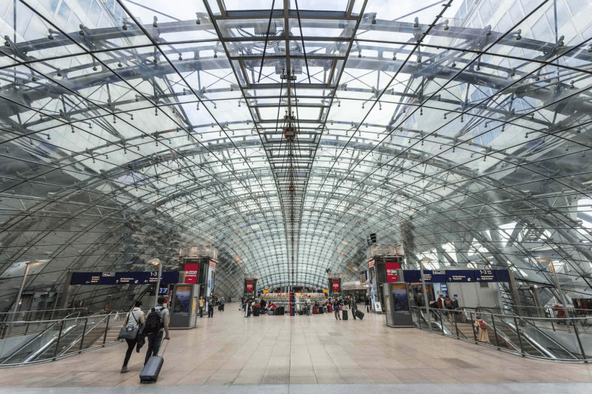
프랑크푸르트 - 프랑크푸르트 공항 (FRA)
독일의 메인 공항은 베를린이 아니고 여기다. 예전엔 베를린이 분단당했기 때문에 서독에서 위치 좋고 규모 있는 여기가 메인이 된 것. 베를린은 독일 내 공항 이용객은 3등에 불과하며, 한국-독일 직항도 프랑크푸르트와 뮌헨만 다니고 있다
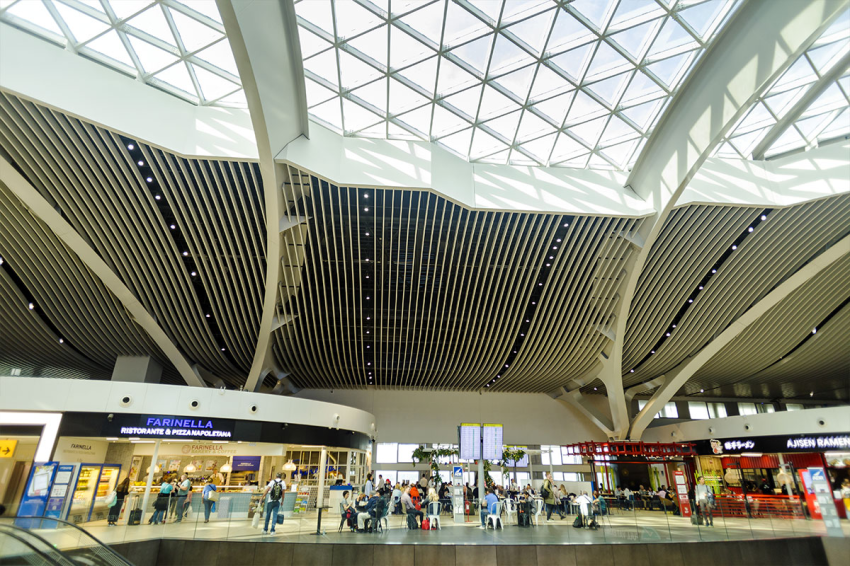
로마 - 피우미치노 레오나르도 다 빈치 공항 (FCO)
다빈치보단 피우미치노 공항으로 더 많이 불린다. 밀라노는 공항이 3개여서 못 올린다
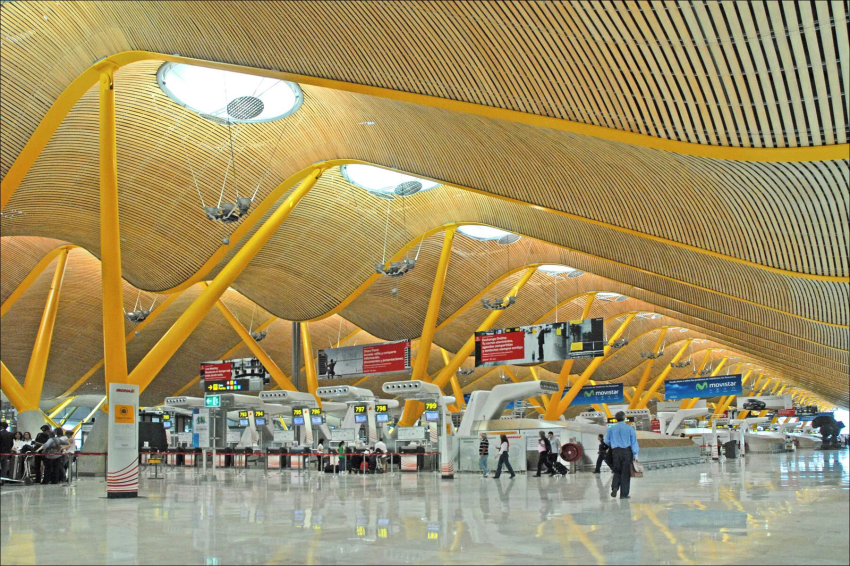
마드리드 - 아돌프 수아레스 마드리드 바라하스 공항 (MAD)
여긴 중남미로 가는 수요가 많은 편. 한국에서 13시간이나 걸린다
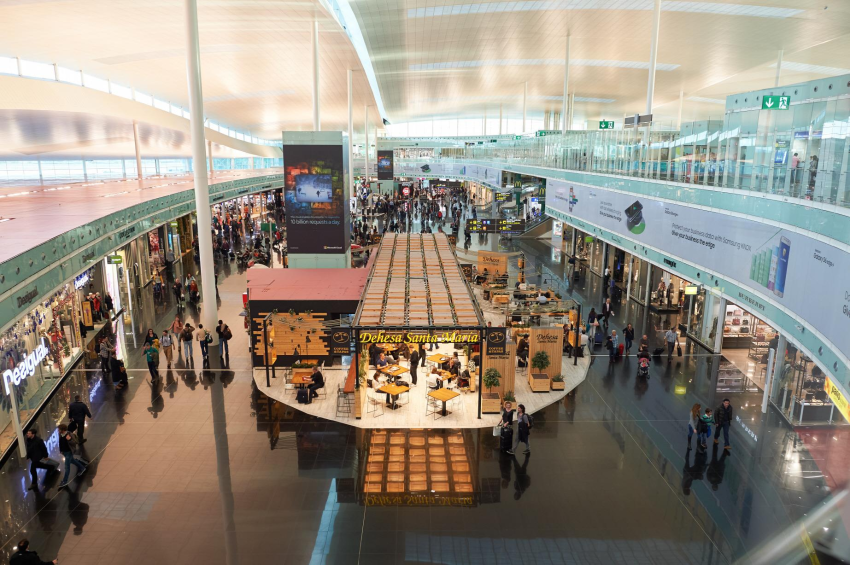
바르셀로나 - 주제프 타라데야스 엘 프라트 공항 (BCN)
한 나라에 2개씩 안하려고 했는데 여기도 연간 이용객 5000만이 넘어서 결국 올렸음. 실제로 한국에선 마드리드보다 바르셀로나행 수요가 더 많다. 공항 이름에 들어간 사람은 카탈루냐 자치정부의 수반이었다
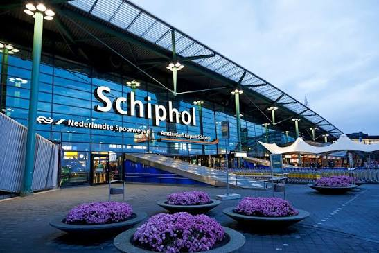
암스테르담 - 스히폴 공항 (AMS)
네덜란드의 유럽 내 티어는 영프독이스러 다음이지만 항공업계에서는 런던 파리 다음으로 이용객이 많다. KLM 유명하잖아
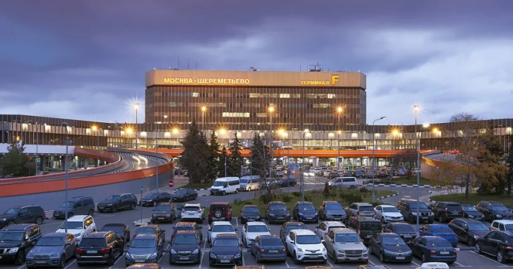
모스크바 - 셰레메티예보 국제공항 (SVO)
모스크바는 공항이 3개가 있고 이들 모두 연간 이용객 1000만이 넘는다. 그 중에서 가장 큰 곳이 여기. 우크라이나 전쟁으로 직항이 끊기긴 했지만 한국행도 여기서만 다녔었다
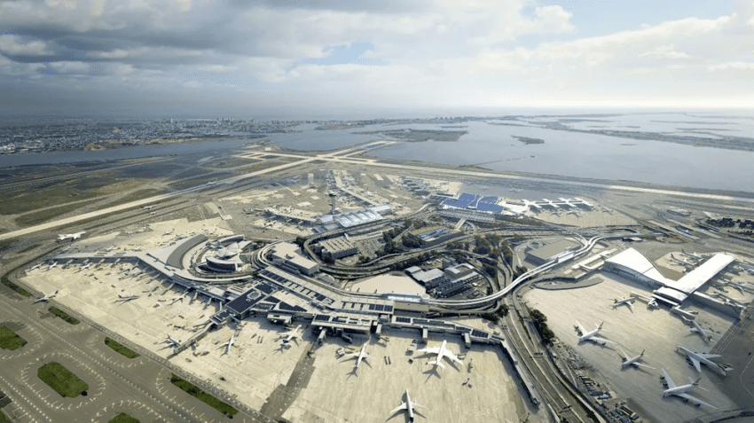
뉴욕 - 존 F. 케네디 국제공항 (JFK)
세계 최고의 도시 뉴욕의 메인 공항. 케네디 사망 직후 1963년 현재의 이름이 되었다. 뉴욕엔 원래 메인 공항이었던 라과디아 공항이 국내선 수요를 분산해 주고, 허드슨 강 건너 뉴어크 공항이 있기 때문에 JFK 공항의 이용객은 미국에서도 6등에 불과하다
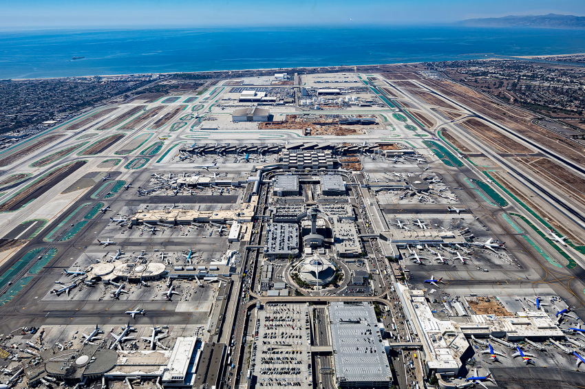
로스앤젤레스 - 로스앤젤레스 국제공항 (LAX)
이 사진만 봐도 엄청 커 보인다. 뉴욕과 달리 LA는 주변 공항들이 분산을 못 시켜줘서 여기가 대부분의 수요를 분담해야 함. LA에 재미교포가 많이 살아서 인천공항의 미국행 노선 중 가장 수요가 많은데 연간 100만을 넘는다
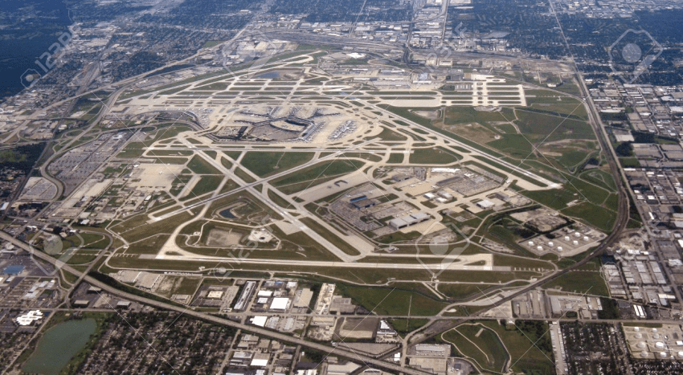
시카고 - 오헤어 국제공항 (ORD)
여기도 엄청 크고 복잡하기로 유명. 하지만 여기보다 더 혼잡한 공항이 아직 더 남아있다
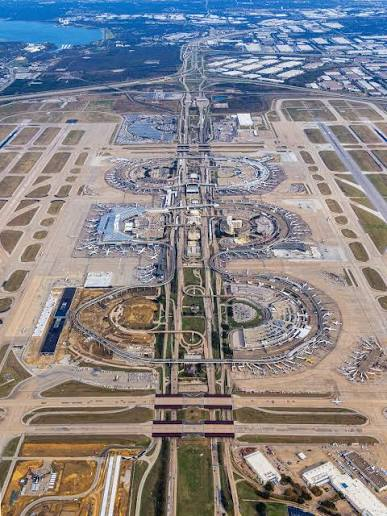
댈러스 - 댈러스 포트워스 국제공항 (DFW)
미국에서 2번째로 혼잡한 공항으로 연간 이용객이 무려 8500만. 아직도 1등은 나오지 않았다
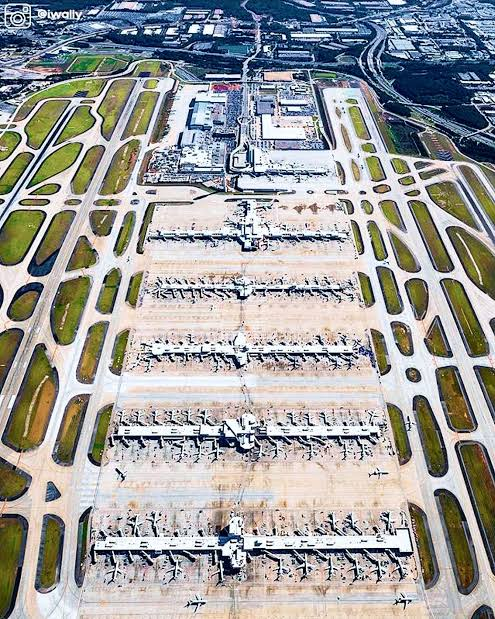
애틀랜타 - 하츠필드-잭슨 애틀랜타 국제공항 (ATL)
드디어 나왔다. 세계에서 가장 혼잡한 공항. 20년 넘게 세계에서 가장 이용객이 많은 공항으로 세계에서 유일하게 연간 이용객 1억 명을 넘긴다. 그렇다고 애틀랜타가 세계에서 가장 큰 도시는 아니다. 당장 미국에서도 최대도시가 아닌 걸. 여기 이용객은 국내선 비중이 아주 높기 때문에 거품이 상당히 꼈다
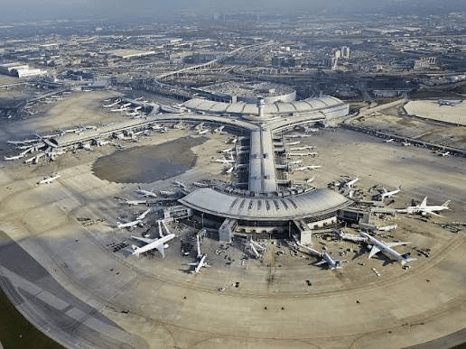
토론토 - 토론토 피어슨 국제공항 (YYZ)
캐나다를 대표하는 공항. 공항 코드가 토론토랑 아무런 관련이 없어 보이게 생겼는데 캐나다의 공항 대부분이 가진 특성이다
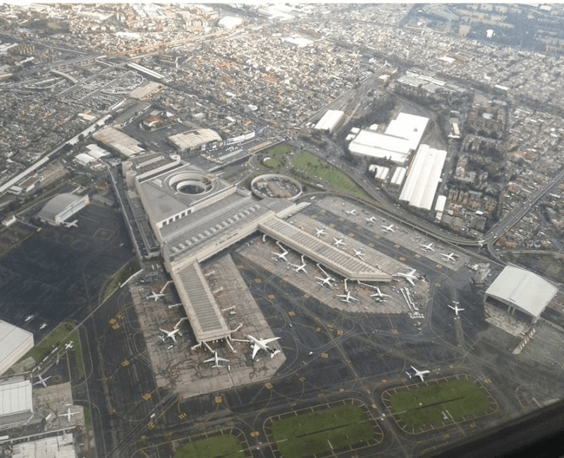
멕시코시티 - 베니토 후아레스 국제공항 (MEX)
대도시의 공항답지 않게 도시 한복판에 있다. 여기도 외곽에 신공항을 만들어 수요를 분산하고 있다
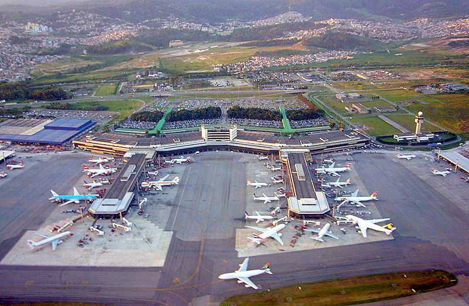
상파울루 - 과룰류스 국제공항 (GRU)
남아메리카에서 가장 혼잡한 공항. 기존의 콩고냐스 공항은 국내선 전용으로 운영 중. 2번째로 혼잡한 공항은 의외로 아르헨티나가 아니고 콜롬비아에 있다. 너무 멀기 때문에 당연히 한국 직항은 없다!
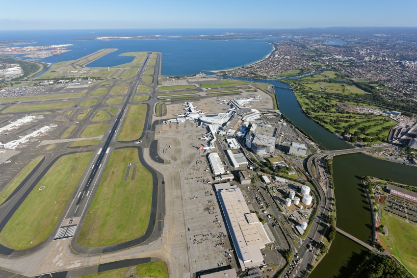
시드니 - 킹스포드 스미스 공항 (SYD)
최근에 시드니 서부에 신공항이 개항했다. 내년이면 드디어 여기서 런던 뉴욕을 한번에 날아갈 수 있음
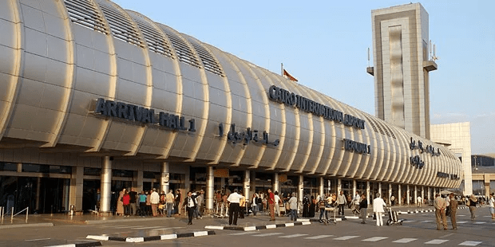
카이로 - 카이로 국제공항
아프리카에서 가장 이용객이 많은 공항. 그래봤자 3000만따리. 그나마 여긴 세계적인 관광지이여서 고정적인 수요가 나오는 편이다
여기 등장한 곳 중 모스크바 상파울루 카이로 제외하면 모두 한국 직항이 존재한다. 그나마 셋 다 있었는데 없어진 경우
언젠가는 이 도시들을 모두 방문할 수 있을까?
댓글
수집 당시 댓글 59개
Randosell · 11.22 23:58:18
· ㅇㅇ · 11.22 23:59:25
· ㅇㅇ · 11.24 03:29:08
ㅇㅇ · 11.23 00:06:38
· ㅇㅇ · 11.24 00:57:52
· ㅇㅇ · 11.24 01:18:30
ㅇㅇ · 11.23 00:17:12
· ㅇㅇ · 11.23 00:20:43
· ㅇㅇ · 11.23 00:21:56
ㅇㅇ · 11.23 00:20:50
ㅇㅇ · 11.23 00:33:34
좋아요근데문제가있아여ㅛ · 11.23 00:36:14
· 좋아요근데문제가있아여ㅛ · 11.23 00:36:34
여러개의중국을지지합니다
달배냥이 · 11.23 01:17:18
땡그랑땡 · 11.23 02:45:55
· ㅇㅇ · 11.24 01:29:43
ㅇㅇ · 11.23 03:49:52
ㅇㅇ · 11.23 06:51:08
SonyXperia · 11.24 00:45:11
ㅇㅇ · 11.24 00:45:56
· 암타황제강시현 · 11.24 00:52:05
restinpieceofcake · 11.24 00:49:24
ㅇㅇ · 11.24 00:51:10
암타황제강시현 · 11.24 00:51:36
ㅇㅇ · 11.24 00:51:38
ㅇㅇ · 11.24 00:51:39
· ㅇㅇ · 11.24 01:00:29
· ㅇㅇ · 11.24 01:00:35
· 123 · 11.24 08:31:50
· ㅇㅇ · 11.24 08:40:58
히이잉 · 11.24 00:55:46
ㅇㅇ · 11.24 01:03:54
신 석 열 · 11.24 01:04:03
· ㅇㅇ · 11.24 08:30:11
ㅇㅇ · 11.24 01:16:08
ㅇㅇ · 11.24 01:30:53
히이잉 · 11.24 01:35:10
ㅇㅇ · 11.24 01:50:11
무안
공항은?
자네가 다 먹어부렀어?
ㅇㅇ · 11.24 02:15:14
내똥집엔크리넥스 · 11.24 02:29:23
히이잉 · 11.24 02:41:15
ㅇㅇ · 11.24 04:53:15
ㅇㅇ · 11.24 05:04:15
멋진남자 · 11.24 07:20:54
ㅇㅇ · 11.24 07:29:07
ㅇㅇ · 11.24 08:23:15
· ㅇㅇ · 11.24 08:30:59
· ㅇㅇ · 11.24 08:48:51
· ㅇㅇ · 11.24 09:05:09
ㅇㅇ · 11.24 10:03:22
· ㅇㅇ · 11.24 10:03:34
ㅇㅇ · 11.24 10:48:38
dd · 11.24 10:53:06
· dd · 11.24 10:54:07
· dd · 11.24 10:55:35
ㅇㅇ · 11.24 12:12:27
04T · 11.24 12:53:39
ㅇㅇ · 11.24 15:02:24
ㅇㅇ · 11.24 15:48:43